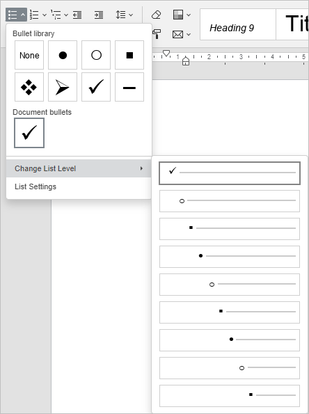
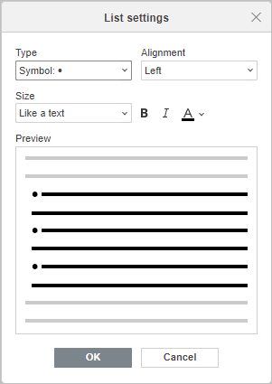
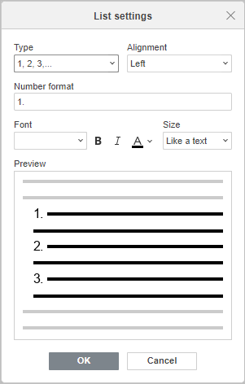
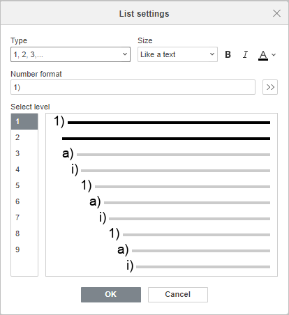
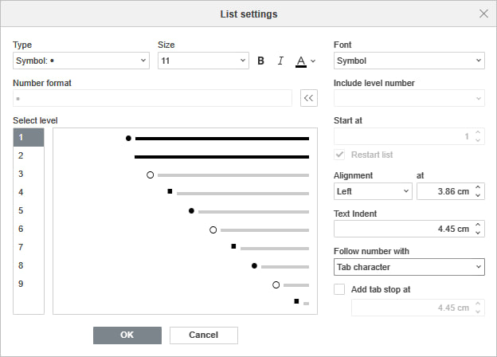

Kreiranje lista
Da biste napravili listu u Document Editoru,
- postavite kursor na mesto gde želite da počne lista (to može biti novi red ili već uneti tekst),
- prebacite se na karticu Početak na gornjoj traci sa alatkama,
-
izaberite tip liste koji želite da kreirate:
- Nenumerisana lista sa oznakama se pravi pomoću ikone Oznake na gornjoj traci sa alatkama
-
Numerisana lista sa ciframa ili slovima se pravi pomoću ikone Numerisanje na gornjoj traci sa alatkama
Kliknite na strelicu nadole pored ikone Oznake ili Numerisanje da izaberete izgled liste.
- svaki put kada pritisnete taster Enter na kraju reda, pojaviće se nova stavka u numerisanoj ili nenumerisanoj listi. Da biste prekinuli, pritisnite taster Backspace i nastavite da kucate obične pasuse teksta.
Program takođe automatski kreira numerisane liste kada unesete cifru 1 sa tačkom ili zagradom i razmakom posle nje: 1., 1). Liste sa oznakama se mogu automatski kreirati kada unesete znakove -, * i razmak posle njih.
Takođe možete promeniti uvlačenje teksta u listama i njihovo ugnježđivanje pomoću ikona Višenivojska lista , Smanji uvlačenje i Povećaj uvlačenje na kartici Početak.
Da biste promenili nivo liste, kliknite na ikonu Numerisanje , Oznake ili Višenivojska lista i izaberite opciju Promeni nivo liste, ili postavite kursor na početak reda i pritisnite taster Tab na tastaturi da pređete na sledeći nivo liste. Nastavite sa željenim nivoom liste.

Dodatne parametre uvlačenja i razmaka možete promeniti na desnoj bočnoj traci i u prozoru naprednih podešavanja. Da biste saznali više o tome, pročitajte odeljke Promena uvlačenja pasusa i Podešavanje proreda pasusa.
Kombinovanje i razdvajanje lista
Da biste spojili listu sa prethodnom:
- kliknite desnim tasterom miša na prvu stavku druge liste,
- izaberite opciju Spoji sa prethodnom listom iz kontekstualnog menija.
Liste će biti spojene, a numeracija će se nastaviti u skladu sa numeracijom prve liste.
Da biste razdvojili listu:
- kliknite desnim tasterom miša na stavku liste gde želite da počne nova lista,
- izaberite opciju Razdvoji listu iz kontekstualnog menija.
Liste će biti razdvojene, a numeracija će se nastaviti u skladu sa numeracijom prve liste.
Promena numeracije
Da biste nastavili sekvencijalnu numeraciju u drugoj listi prema numeraciji prve liste:
- kliknite desnim tasterom miša na prvu stavku druge liste,
- izaberite opciju Nastavi numeraciju iz kontekstualnog menija.
Numeracija će se nastaviti u skladu sa numeracijom prve liste.
Da biste postavili određenu početnu vrednost numeracije:
- kliknite desnim tasterom miša na stavku liste gde želite da primenite novu vrednost numeracije,
- izaberite opciju Podesi vrednost numeracije iz kontekstualnog menija,
- u novootvorenom prozoru unesite željenu numeričku vrednost i kliknite na dugme OK.
Promena podešavanja lista
Da biste promenili podešavanja nenumerisanih ili numerisanih lista, kao što su tip oznake/broja, poravnanje, veličina i boja:
- kliknite na postojeću stavku liste ili izaberite tekst koji želite da formatirate kao listu,
- kliknite na ikonu Oznake ili Numerisanje na kartici Početak na gornjoj traci sa alatkama,
- izaberite opciju Podešavanja liste,
-
otvoriće se prozor Podešavanja liste. Prozor za podešavanje nenumerisane liste izgleda ovako:

Prozor za podešavanje numerisane liste izgleda ovako:

Za nenumerisanu listu možete izabrati znak koji će se koristiti kao oznaka, dok za numerisanu listu možete odabrati tip brojeva i font. Opcije Poravnanje, Veličina i naglašavanje teksta poput Podebljano/Kurziv/Boja iste su za obe vrste lista.
- Oznaka omogućava izbor željenog znaka koji se koristi za nenumerisanu listu. Kada kliknete na polje Font i simbol, pojaviće se prozor Simbol gde možete izabrati jedan od dostupnih znakova. Da saznate više o radu sa simbolima, pogledajte ovaj članak.
- Tip omogućava izbor željenog tipa numeracije za numerisanu listu. Dostupne su sledeće opcije: Nema, 1, 2, 3,..., a, b, c,..., A, B, C,..., i, ii, iii,..., I, II, III,....
- Poravnanje omogućava izbor tipa horizontalnog poravnanja oznaka/brojeva. Dostupne opcije su: Levo, Sredina, Desno.
- Veličina omogućava izbor veličine oznake/broja. Opcija Kao tekst je podrazumevano izabrana. Kada je aktivna, veličina oznake ili broja odgovara veličini teksta. Možete izabrati neku od unapred definisanih veličina u rasponu od 8 do 96.
- Podebljano/Kurziv/Boja omogućava naglašavanje i isticanje oznake/broja. Za Boju, opcija Kao tekst je podrazumevano izabrana. Kada je aktivna, boja oznake ili broja odgovara boji teksta. Možete izabrati opciju Automatski da primenite automatsku boju, ili neku od Boja teme, Standardnih boja ili Skorašnjih boja iz palete, ili kliknuti Više boja za izbor prilagođene boje.
Sve promene će biti prikazane u polju Pregled.
-
kliknite OK da primenite promene i zatvorite prozor sa podešavanjima.
Desnim klikom na nenumerisanu listu i izborom opcije Podesi uvlačenje liste možete pristupiti istim podešavanjima kao i za višenivojsku listu.
Da biste promenili podešavanja višenivojske liste,
- kliknite na stavku liste,
- kliknite na ikonu Višenivojska lista na kartici Početak na gornjoj traci sa alatkama,
- izaberite opciju Podešavanja liste,
-
otvoriće se prozor Podešavanja liste. Prozor za podešavanje višenivojske liste izgleda ovako:

Izaberite željeni nivo liste u polju Nivo sa leve strane, zatim koristite dugmad na vrhu da prilagodite izgled oznake ili broja za izabrani nivo:
- Tip omogućava izbor željenog tipa numeracije ili znaka oznake. Dostupne opcije za numerisanu listu su: Nema, 1, 2, 3,..., a, b, c,..., A, B, C,..., i, ii, iii,..., I, II, III,.... Za nenumerisanu listu možete izabrati neki od podrazumevanih simbola ili opciju Nova oznaka. Kada kliknete ovu opciju, otvoriće se prozor Simbol gde možete izabrati jedan od dostupnih znakova. Više o radu sa simbolima pročitajte u ovom članku.
- Poravnanje omogućava izbor tipa horizontalnog poravnanja oznaka/brojeva na početku pasusa. Opcije su: Levo, Sredina, Desno.
- Veličina omogućava izbor veličine oznake/broja. Opcija Kao tekst je podrazumevano izabrana. Možete izabrati neku od veličina od 8 do 96.
- Podebljano/Kurziv/Boja omogućava naglašavanje i isticanje oznake/broja. Za Boju, opcija Kao tekst je podrazumevano aktivna. Kada je aktivna, boja oznake ili broja odgovara boji teksta. Možete izabrati opciju Automatski, neku od Boja teme, Standardnih boja ili Skorašnjih boja, ili kliknuti Više boja da odaberete prilagođenu boju.
- Format broja prikazuje stil znaka koji se koristi za kreiranje liste.
-
Kliknite na dvosmernu strelicu pored polja Format broja da pristupite naprednim podešavanjima liste. Možete prilagođavati svaki nivo višenivojske liste izborom nivoa u odeljku Izaberite nivo.

- Font omogućava izbor formatiranja fonta,
- Uključi broj nivoa omogućava da označite broj nadređenog nivoa za podređeni nivo,
- Počni od omogućava izbor broja od kog će numerisana lista početi. Označite polje Restartuj listu da resetujete numeraciju,
- Poravnanje omogućava podešavanje tipa poravnanja za svaki nivo liste. Izaberite Levo, Sredina ili Desno iz padajuće liste i podesite razmak pre znaka liste,
- Uvlačenje teksta omogućava podešavanje razmaka između znaka liste i teksta,
- Nakon broja sledi omogućava izbor šta će se pojaviti posle znaka formata broja. Opcije su: TAB znak, Razmak ili Nijedno. Kada izaberete TAB znak, opcija Dodaj tabulator na postaje dostupna. Označite polje i unesite dužinu uvlačenja.
Sve promene će biti prikazane u polju Pregled.
- kliknite OK da primenite promene i zatvorite prozor sa podešavanjima.